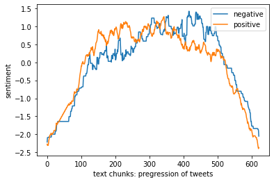
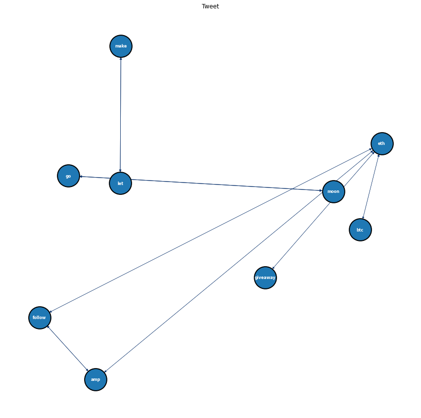

import nltk
import string
from nltk.stem import WordNetLemmatizer
from nltk.stem import PorterStemmer
from nltk.corpus import stopwords
from nltk.tokenize import word_tokenize
from nltk.sentiment import SentimentIntensityAnalyzer
import os
import matplotlib.pyplot as plt
import numpy as np
import pandas as pd
from apyori import apriori
import networkx as nx #USER PARAM
input_path = '../../data/01-modified-data/twitter_text_data.csv'
compute_sentiment = True
sentiment = [] #average sentiment of each chunck of text
ave_window_size = 250 #size of scanning window for moving average
#OUTPUT FILE
output='transactions.txt'
if os.path.exists(output): os.remove(output)
#INITIALIZE
lemmatizer = WordNetLemmatizer()
ps = PorterStemmer()
sia = SentimentIntensityAnalyzer()
#ADD MORE
stopwords = stopwords.words('english')
add=['mr','mrs','wa','dr','said','back','could','one','looked','like','know','around','dont', 'rt','', '1']
for sp in add: stopwords.append(sp)
def read_and_clean(path,START=0,STOP=-1):
global sentiment
#-----------------------
#INSERT CODE TO READ IN AS ONE BIG STING
file = open(path, 'rt', encoding= 'utf-8')
text = file.read().lower()
file.close()
#-----------------------
#REMOVE HEADER, AND NEW LINES
text=text.replace("'",'') #wasn't --> wasnt
lines = text.splitlines(); text='';
lines=lines[START:STOP] # mystring.replace('\n', ' ')
for line in lines: text=text+' '+line
#-----------------------
#INSERT CODE TO ONLY KEEP CHAR IN string.printable
tmp = ''
printable = set(string.printable)
for char in text:
if (char in printable ):
tmp = tmp + char
text = tmp
#-----------------------
#BREAK INTO CHUNKS (SENTANCES OR OTHERWISE)
sentences=nltk.tokenize.sent_tokenize(text) #SENTENCES
print("NUMBER OF SENTENCES FOUND:",len(sentences)); #print(sentences)
#CLEAN AND LEMMATIZE
keep='0123456789abcdefghijklmnopqrstuvwxy';
new_sentences=[]; vocabulary=[]
for sentence in sentences:
new_sentence=''
# REBUILD LEMITIZED SENTENCE
for word in sentence.split():
#ONLY KEEP CHAR IN "keep"
tmp2=''
for char in word:
if(char in keep):
tmp2=tmp2+char
else:
tmp2=tmp2+' '
word=tmp2
#-----------------------
# INSERT CODE TO LEMMATIZE THE WORDS
new_word = lemmatizer.lemmatize(word)
#-----------------------
#REMOVE WHITE SPACES
new_word=new_word.replace(' ', '')
#BUILD NEW SENTANCE BACK UP
if( new_word not in stopwords):
if(new_sentence==''):
new_sentence=new_word
else:
new_sentence=new_sentence+','+new_word
if(new_word not in vocabulary): vocabulary.append(new_word)
#SAVE (LIST OF LISTS)
new_sentences.append(new_sentence.split(","))
#SIA
if(compute_sentiment):
#-----------------------
# INSERT CODE TO USE NLTK TO DO SENTIMENT ANALYSIS
new_text= new_sentence.replace(',',' ')
sentiment_level = sia.polarity_scores(new_text)
sentiment.append([sentiment_level['neg'],sentiment_level['neu'],sentiment_level['pos'],sentiment_level['compound']])
#-----------------------
#SAVE SENTANCE TO OUTPUT FILE
if(len(new_sentence.split(','))>2):
f = open(output, "a")
f.write(new_sentence+"\n")
f.close()
sentiment=np.array(sentiment)
print("TOTAL AVERAGE SENTEMENT:",np.mean(sentiment,axis=0))
print("VOCAB LENGTH",len(vocabulary))
return new_sentences
transactions=read_and_clean(input_path,400,-400)
print(transactions[0:5])NUMBER OF SENTENCES FOUND: 621
TOTAL AVERAGE SENTEMENT: [0.04147504 0.80044122 0.15648148 0.2132087 ]
VOCAB LENGTH 3616
[['enter', 'follow', 'bellycatsnft', 'monsterinhype', 'moonkillersnft', 'stussyjimin', 'park', 'tailor', 'chaos', 'jimin', 'coming', 'httpstcotc2yppqs', 'mutagensamurai', 'art', 'dead', '008eth', 'reserve', 'piece', 'decline', 'culture', 'modern', 'civilisation'], ['using', 'combination', 'good', 'drop', 'project', 'bjbaumann2014', 'monsterrafo', 'cdoug34', 'wild3eth', 'okaybroomer', 'precious7674', 'itsmijj', 'httpstcod3o88maudc', 'exterminatorgg', 'let', 'get', 'rid', 'animal', 'make', 'mess'], ['ape', 'go', 'moon'], ['exterminator', 'coming'], ['yfiusdt', 'yfi', 'signal', '2', 'last', 'signal', '109', 'min', 'ago', '847600000000', '855500000000', '093', 'volume', 'httpstconese5db5i', 'robinneth', 'robin', 'opentigers', 'giveaway', 'openw', 'nft', 'marketplace', 'first', 'nft', 'creation', 'join', 'purchase', 'opentiger', 'ethw', 'chai', 'new', 'ens', 'domain', 'registration', 'valieth', 'xuebaochaieth', '00069eth', 'dumbelbeeeth', 'coindogface', '390', 'xrp', '10', 'people', 'enter', 'follow', 'coindogfacenfts', '2', '3', 'tag', '3', 'friend', '48', 'h', 'eth', 'nftg', 'dasfruits', 'bluff', 'x', 'oxya', 'origin', '5', 'landlist', 'giveaway', 'landlisted', 'double', 'chance', 'earn', '3', 'eth', 'mint', 'enter', 'yukheenft', 'monstermong', 'ha', 'invaded', 'babymong', 'babymong', 'need', 'peace', 'babymong', '00035', 'eth', 'polygon', 'httpstcoed9y4tplep', 'ope', 'clonex', '5891', 'sold', 'looksrare', 'value', '1449', 'eth', 'price', '18751', 'usd', 'view', 'httpstcopostwyvthn', 'deltatradinghub', 'btc', 'see', 'reversal', 'crypto']]def moving_ave(y,w=100):
#-----------------------
# INSERT CODE TO COMPUTE THE MOVING AVERAGE OF A SIGNAL Y
m_a = np.ones((1,w))/w
m_a = m_a[0,:]
return np.convolve(y, m_a, 'same')
#-----------------------
# INSERT CODE TO VISUALIZE THE SENTIMENT ANALYSIS AS A TIME-SERIES (SEE PLOT FOR AN EXAMPLE)
if(compute_sentiment):
neg = moving_ave(sentiment[:,0], ave_window_size)
neg = (neg-np.mean(neg))/np.std(neg)
nue = moving_ave(sentiment[:,1], ave_window_size)
nue = (nue-np.mean(nue))/np.std(nue)
compound = moving_ave(sentiment[:,2], ave_window_size)
compound = (compound-np.mean(compound))/np.std(compound)
pos = moving_ave(sentiment[:,3], ave_window_size)
pos = (pos-np.mean(pos))/np.std(pos)
index = np.linspace(0, len(sentiment), len(sentiment))
plt.plot(index, neg, label = 'negative')
plt.plot(index, pos, label = 'positive')
plt.legend(loc = 'upper right')
plt.xlabel('text chunks: pregression of tweets')
plt.ylabel('sentiment')
plt.show
# Re-format output
def reformat_results(results):
#CLEAN-UP RESULTS
keep=[]
for i in range(0,len(results)):
for j in range(0,len(list(results[i]))):
# print(results)
if(j>1):
for k in range(0,len(list(results[i][j]))):
if(len(results[i][j][k][0])!=0):
rhs=list(results[i][j][k][0])
lhs=list(results[i][j][k][1])
conf=float(results[i][j][k][2])
lift=float(results[i][j][k][3])
keep.append([rhs,lhs,supp,conf,supp*conf,lift])
if(j==1):
supp=results[i][j]
return pd.DataFrame(keep, columns =["rhs","lhs","supp","conf","supp x conf","lift"])def convert_to_network(df):
print(df)
#BUILD GRAPH
G = nx.DiGraph() # DIRECTED
for row in df.iterrows():
# for column in df.columns:
lhs="_".join(row[1][0])
rhs="_".join(row[1][1])
conf=row[1][3]; #print(conf)
if(lhs not in G.nodes):
G.add_node(lhs)
if(rhs not in G.nodes):
G.add_node(rhs)
edge=(lhs,rhs)
if edge not in G.edges:
G.add_edge(lhs, rhs, weight=conf)
# print(G.nodes)
# print(G.edges)
return Gdef plot_network(G):
#SPECIFIY X-Y POSITIONS FOR PLOTTING
pos=nx.random_layout(G)
#GENERATE PLOT
fig, ax = plt.subplots()
fig.set_size_inches(15, 15)
#assign colors based on attributes
weights_e = [G[u][v]['weight'] for u,v in G.edges()]
#SAMPLE CMAP FOR COLORS
cmap=plt.cm.get_cmap('Blues')
colors_e = [cmap(G[u][v]['weight']*10) for u,v in G.edges()]
#PLOT
nx.draw(
G,
edgecolors="black",
edge_color=colors_e,
node_size=2000,
linewidths=2,
font_size=8,
font_color="white",
font_weight="bold",
width=weights_e,
with_labels=True,
pos=pos,
ax=ax
)
ax.set(title='Tweet')
plt.show()#print(pd.DataFrame(transactions))
transactions_res = list(apriori(transactions,min_support = 0.083, min_confidence = 0, min_length = 1, max_length = 5))
print(len(transactions_res))23# INSERT CODE TO PLOT THE RESULTS AS A NETWORK-X OBJECT
result = reformat_results(transactions_res)
network = convert_to_network(result)
plot_network(network) rhs lhs supp conf supp x conf lift
0 [amp] [eth] 0.083736 0.666667 0.055824 2.287293
1 [eth] [amp] 0.083736 0.287293 0.024057 2.287293
2 [amp] [follow] 0.086957 0.692308 0.060201 4.432197
3 [follow] [amp] 0.086957 0.556701 0.048409 4.432197
4 [btc] [eth] 0.090177 0.674699 0.060842 2.314851
5 [eth] [btc] 0.090177 0.309392 0.027900 2.314851
6 [eth] [follow] 0.098229 0.337017 0.033105 2.157601
7 [follow] [eth] 0.098229 0.628866 0.061773 2.157601
8 [eth] [giveaway] 0.099839 0.342541 0.034199 2.127182
9 [giveaway] [eth] 0.099839 0.620000 0.061900 2.127182
10 [go] [moon] 0.083736 0.962963 0.080635 10.678571
11 [moon] [go] 0.083736 0.928571 0.077755 10.678571
12 [let] [make] 0.083736 0.787879 0.065974 7.413223
13 [make] [let] 0.083736 0.787879 0.065974 7.413223